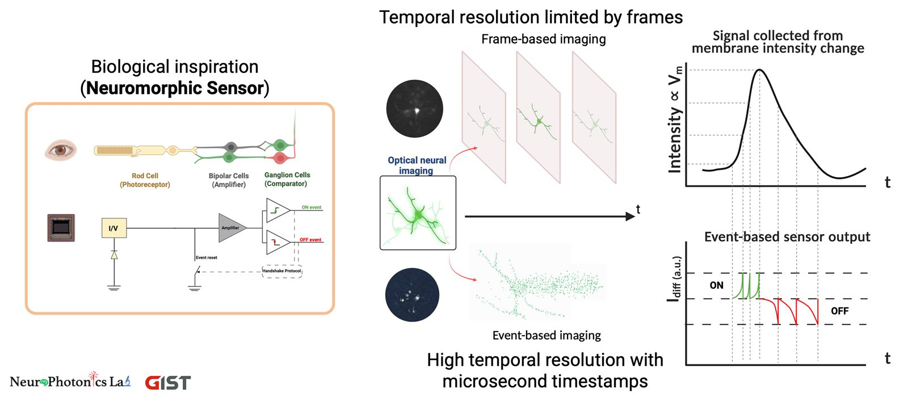

Open original imageNeuromorphic, Event-based Optical Neural Imaging
We develop neuromorphic, event-based optical neural imaging that captures intensity changes asynchronously, enabling millisecond temporal resolution and efficient representation of dynamics. Our work spans custom system building, event/frame sensor fusion for neural and blood-flow imaging, and computational methods to extract meaningful spatiotemporal signals.
Project details for Neuromorphic, Event-based Optical Neural Imaging
Our research focuses on neuromorphic, event-based optical neural imaging, spanning imaging system development, data acquisition, and computational analysis.
Inspired by the human visual system, event-based sensors asynchronously detect changes in light intensity rather than recording full image frames, enabling millisecond temporal resolution and efficient data representation.
- Custom optical imaging system design and development
- Integration of event-based and frame-based sensors for neural activity and blood flow imaging
- Data processing and analysis to extract meaningful spatiotemporal signals from event-based measurements